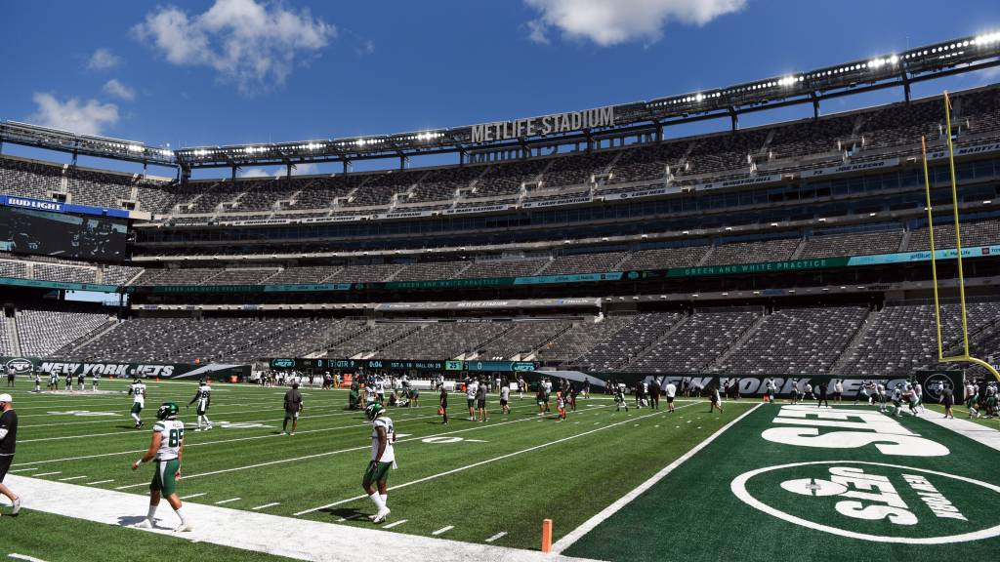

Történet:
A New York Jets jogelődjének számító csapatot Harry Wismer, az AFL alapító tagja hozta létre, és a kezdeti név New York Titans volt, amivel azt akarta kifejezni, hogy ez a klub erős, szilárd lesz, amely a másik New York-i franchise, a Giants méltó versenytársa kíván lenni. A sajtó azonban nemigen törődött az új klubbal, amelynek még normális stadionja sem volt (az elhasznált Polo Ground volt az otthonuk). Az új klub pedig nem szerepelt rosszul, az első két szezonjában is 7–7-es mutatót ért el az AFL keleti csoportjában. Wismer 1962-ben Jetsre változtatta a klub nevét, majd egy évre rá eladta egy David „Sonny” Werblin által vezetett ötfős konzorciumnak, akiknek a jóvoltából 1964-ben a Shea Stadionba költözött a csapat. Werblin a sikeres Weeb Ewbanket szerződtette vezetőedzőnek, aki a Baltimore Coltssal két bajnoki címet is nyert, ezenkívül 1964-ben a csapathoz vitte a tehetséges fiatal Matt Snell futót, majd a következő évben a magyar származású Joe Namath irányítót is. 1968-ban bekövetkezett a nagy áttörés: igazi csapatmunkát produkálva megnyerték a csoportjukat (11–3), majd a liga döntőjében legyőzték az Oakland Raiderst (27–23), és játszhattak a Super Bowlban. A mérkőzést 1969 január 12-én rendezték a Miami Orange Bowl stadionban, és az ellenfél az a Baltimore Colts volt. A Jets azonban a nem túl pontgazdag összecsapáson 16–7-re legyőzte a Coltsot, pedig az előjelek más szempontból sem voltak kedvezőek a Jets szempontjából.
Eredmények:
Egyetlen super bowl győzelmét 1968-ban szerezte, emelett négyzer jutott ki első helyen a kis csoportból és még egyszer sem nyerte meg az egyész AFC csoportot.
Stadion:
1960-tól 63-ig a megviselt Polo Groundsban, 1964-től 83-ig a Shea Stadium-ban, 1984-től 2010-ig a Giants Stadium-ban és 2010-től mostanáig a MetLife Stadium-ban küzdött ellenfelei ellen a csapat.
MetLife Stadium:
A stadiont egyidőben több mint 82ezer embert képes fogadni, az említett csapatok stadionjai közül ez az egyetlen amiben nem gyep vagy fű a talaj, hanem műfű. Az építkezés összege meghaladta az óriási 1,6 milliárd dolláros összeget, bár a költségvetés a két egymás mellett lévő stadionra szólt, de ennek a fele is óriási összegnek számít.
